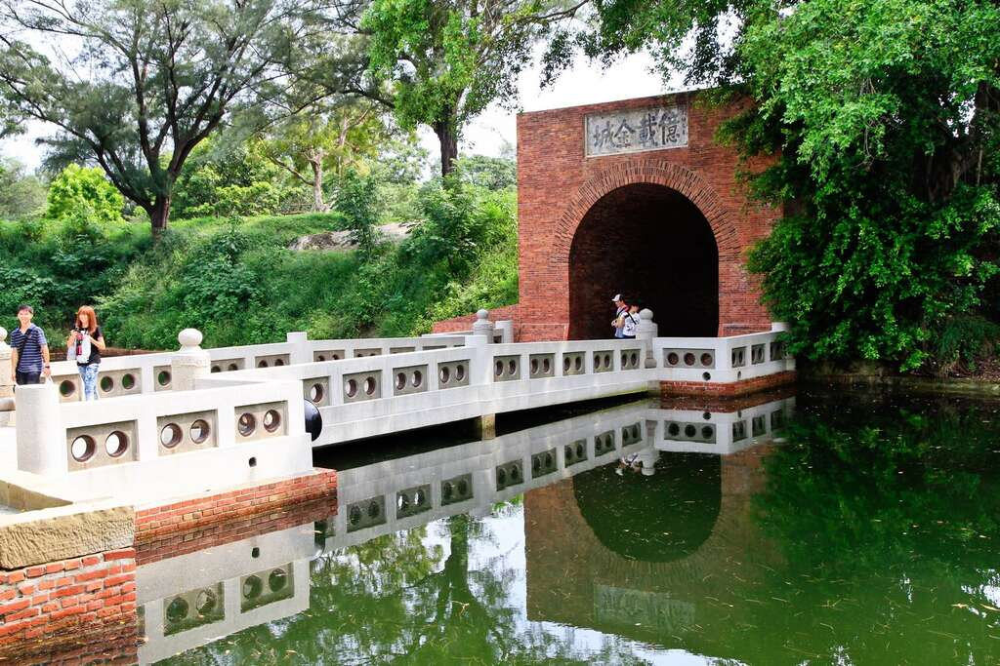
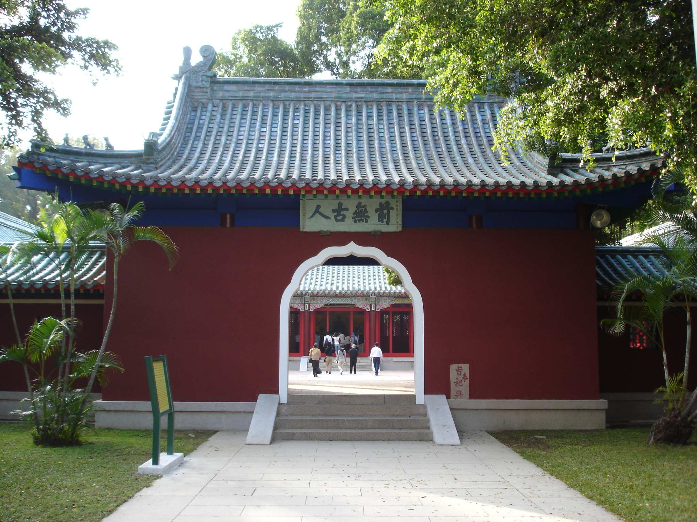

1653年為當時進佔臺灣南部之荷人所建，最初稱為「普羅民遮城」， 與安平的「熱蘭遮城」遙遙相對，互為犄角。熱蘭遮城作為荷蘭總督統治中樞， 普羅民遮城則作為行政及商業中心。普羅民遮城之建築為三座略為方形的台座相接而成， 每個台座之上皆建有西洋式樓房，城牆以糖水、糯米汁攪拌蚵殼灰作為接合料， 以紅磚石為主要建材疊砌而成，堅如磐石，經歷三百多年仍可見厚牆及拱圈遺構。 歷經三百多年的赤崁樓，今天的景貌是飛簷紅瓦，樓閣巍峨。在歷史變遷中， 曾是荷蘭時代的西式城堡，曾是清領時代的中式樓閣，曾是日本時代陸軍醫院， 迄今的歷史文物館，見證著落日餘暉下的滄海桑田。 民國七十二年（1983），內政部列為第一級古蹟。

清同治十三年（1874）日本藉口琉球漁民漂流至屏東滿州鄉而遭當地原住民殺害， 出兵侵臺(史稱牡丹事件)，清政府派沈葆楨來臺籌辦防務並派代表和日本交涉撤兵。 另一方面積極加強防務，鑑於鞏固安平海防保護臺灣府城，建請建造砲台。 利用熱蘭遮城磚材與洋式紅磚建造，四周有護河，引海水灌注，闊約十尺，水深沒頂， 城門出入一座，開向東南。清光緒二年（1876）建竣，其不僅是臺灣第一座現代西式砲台， 也配備五門英製阿姆斯脫郎十八噸前膛大砲，威力強大。砲位下原有兩尺厚的三合土屋， 作為避砲室和倉庫，昔已破壞，今改斜坡覆土。二十世紀初，大砲毀壞變賣，木橋斷陷， 城洞砌磚封閉，一副殘破景觀。民國六十四年，砲台建成100週年時， 臺南市政府大規模整建並仿製大砲、小砲，始成今貌。

於明永曆十六年（1662）之後，主祀開臺聖王，乃因東寜王國亡後， 民眾對鄭成功感念依舊，彰頌其來台驅荷，開疆擴土，稱以開山王廟， 之後曾擴地重修但不久傾塌。清同治十三年（1874），沈葆楨因牡丹社事件來臺籌防， 奏請專祠賜謚，遂改開山王廟為「延平郡王祠」，並列春、秋祀典。明治二十八年（1895）， 日本領臺後，以鄭成功的日本血緣關係，改建為「開山神社」。 民國五十二年（1963）重建，並核定中樞祭典於四月二十九日。